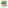
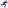

Sport
OpenStreetMap
Die meisten Daten stammen von OpenStreetMap (OSM). Diese werden mindestens quartalsweise europaweit durch TYDAC aufbereitet. Stellen Sie Fehler fest, machen Sie mit beim Crowdsourcing, werden Sie einfach OSM Mapper! Klicken Sie hier und wählen Sie Start Mapping.
Legende und Angaben zur Datenaktualität
| Vita Parcours Datenquelle: Zürich Vita Parcours Nachführung: Bei Änderungen |
|
|
|
Wanderwegenetz swisstopo Datenquelle: swisstopo Nachführung: jährlich |
|
 |
Wanderwegweiser Datenquelle: Ueli Morf, TYDAC, MAP+ User Nachführung: periodisch |
| Wander- und Bergpässe Datenquelle: TYDAC und Alternatives Wandern Nachführung: keine |
|
| Klettersteige Datenquelle: Alternatives Wandern Nachführung: keine |
|
|
 |
Eislaufbahnen Datenquelle: OSM Nachführung: Wöchentlich |